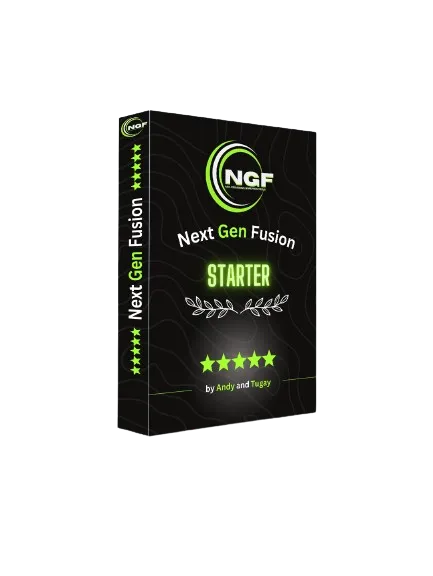

Remote-Job-Start für Quereinsteiger
Produktprofil · Marktplatz-Daten 2026-10-14 · Verkaufsseiten-Recherche 2026-10-14 · Kategorien: Marketing Services
- Remote-Job-Start für Quereinsteiger ist ein/e Download in Marketing Services, vertrieben über den Digistore24-Marktplatz von Anbieter fernundfrei, gelistet seit 2026-10-12.
- Listenpreis $83.68 (subscription) — Checkout, Auslieferung und Rückerstattungen laufen über Digistore24 selbst, nicht über den Anbieter.
- Käuferschutz: keine standardisierte Garantie-Formulierung gefunden — Rückerstattungsbedingungen vor der Zahlung auf der offiziellen Seite prüfen.
Interesse an Remote-Job-Start für Quereinsteiger? Aktueller Preis, Boni und Garantiebedingungen finden Sie auf der offiziellen Seite des Anbieters:
Offizielle Verkaufsseite ansehen
Affiliate-Link (Werbung) — wir verdienen ggf. eine Provision, ohne Mehrkosten für Sie.
Marktplatz-Daten
| Produkttyp | Download |
|---|---|
| Preis | $83.68 (Subscription) |
| Garantie/Rückgabe | Laut Verkaufsseite des Anbieters — vor dem Kauf auf der offiziellen Seite prüfen |
| Anbieter | fernundfrei (gelistet seit 2026-10-12) |
Marktplatz-Beschreibung des Anbieters
Fern & Frei ist der ehrliche Einstieg in flexible Remote-Arbeit: drei ausführliche digitale Werkzeuge für Orientierung, Bewerbung und Jobsuche plus 30 Tage Zugang zum geprüften Fern & Frei Radar auf Telegram. Für Menschen, die sich mehr Freiheit im Alltag wünschen – ohne leere Online-Business-Versprechen. Partner erhalten 50 % Provision auf die erfolgreiche Erstbestellung und auf die erfolgreichen Radar-Folgeraten.
Von der Verkaufsseite des Anbieters
Seitentitel: Fern & Frei Startpaket — Dein realistischer Remote-Start
Meta-Beschreibung: Fern & Frei hilft dir, einen realistischen Weg in Remote-Arbeit zu finden – mit klarer Orientierung, aktuellen Chancen und KI-Begleitung.
Hauptüberschrift
Arbeit, die in dein Leben passt.
Abschnitts-Überschriften
- Es gibt nicht den einen Remote-Weg. Aber es gibt einen, der zu dir passt.
- Kein eBook zum Weglegen. Ein Start, der dich wirklich weiterbringt.
- Weniger suchen. Besser entscheiden.
- Du musst nicht perfekt starten. Nur ehrlich.
- Wir sind Vanja und Jakob.
- Dein Startpaket für den ersten echten Schritt.
- Fragen, bevor du startest.
- Du darfst dir ein Arbeitsleben wünschen, das wieder Platz für dein Leben lässt.
Einstiegstext
Fern & Frei zeigt dir einen realistischen Weg in die Remote-Arbeit — ohne leere Online-Business-Versprechen, aber mit Orientierung, aktuellen Chancen und einem nächsten Schritt, der machbar ist.
Du suchst nicht irgendeinen Remote-Job. Du suchst einen Alltag, der wieder mehr nach dir aussieht.
Zwischen „Virtuelle Assistenz“, Affiliate-Hype und hunderten Jobtiteln fehlt ein ehrlicher Startpunkt.
Deine Erfahrung ist da — nur bisher oft nicht in der Sprache geschrieben, die Remote-Firmen verstehen.
CTA-Buttons: „Startpaket sichern"
Recherche-Methode: rohes HTML · 882 Wörter · Qualität: rich · recherchiert am 2026-10-14. Vollständige Recherche-Datei (MD) ↗
Wie Produkte dieser Art geliefert werden
Allgemeiner Hinweis zu diesem Produkttyp (keine anbieterspezifische Anleitung): Download-Produkte werden digital geliefert: sofort nach dem Checkout erhalten Sie Downloadlinks (oder Zugang zu einem Mitgliederbereich) — kein physischer Versand. Für die genaue Anwendung von Remote-Job-Start für Quereinsteiger sind die offizielle Verkaufsseite und die enthaltenen Materialien maßgeblich.
Gut zu wissen
- Keine Garantie-Formulierung in unserer Recherche gefunden — bestätigen Sie das Rückgabefenster auf der offiziellen Seite, bevor Sie kaufen.
Was ist Remote-Job-Start für Quereinsteiger?
Remote-Job-Start für Quereinsteiger ist ein/e download in der Kategorie Marketing-Dienstleistungen des Digistore24-Marktplatzes, veröffentlicht von Anbieter fernundfrei und im Verkauf seit 2026-10-12. Der Anbieter beschreibt es so: "Fern & Frei ist der ehrliche Einstieg in flexible Remote-Arbeit: drei ausführliche digitale Werkzeuge für Orientierung, Bewerbung und Jobsuche plus 30 Tage Zugang zum geprüften Fern & Frei Radar auf Telegram. Für Menschen, die sich mehr Freiheit im Alltag wüns" (Marktplatz-Beschreibung des Anbieters, leicht gekürzt).
Remote-Job-Start für Quereinsteiger Preis: was Sie zahlen
Der Marktplatz listet Remote-Job-Start für Quereinsteiger zum $83.68 Preis (subscription). Digistore24 fügt im Checkout die gesetzliche Steuer Ihres Landes hinzu — dort sehen Sie den Endbetrag vor der Zahlung. Eine separate Plattformgebühr gibt es nicht; Anbieter können eigene Upsells nach dem Checkout anbieten.
Remote-Job-Start für Quereinsteiger Rückerstattung und Geld-zurück-Garantie
Wir haben keine standardisierte Garantie-Formulierung auf der Verkaufsseite gefunden. Rückerstattungen für Digistore24-Käufe laufen über die Plattform: Antrag über den Support-Link in Ihrer Bestell-E-Mail, innerhalb des Garantiezeitfensters, das im Checkout angezeigt wird. Praktischer Rat: Entscheiden Sie innerhalb des Fensters — wenn das Produkt unter den Erwartungen bleibt, erstatten lassen statt irren lassen.
Mechanik im Detail: So funktionieren Digistore24-Rückerstattungen.
Für wen ist Remote-Job-Start für Quereinsteiger geeignet?
Basierend auf der Marketing-Dienstleistungen-Einordnung und der subscription-Abrechnung richtet sich Remote-Job-Start für Quereinsteiger an Käufer, die marketing-dienstleistungen-Lösungen suchen im mittleren Preisbereich. Der ehrliche Test ist nicht die Kategorie, sondern Ihre eigene Situation: Werden Sie es realistisch innerhalb des Garantiefensters nutzen? Wenn ja, ist der Preis eine Investition; wenn nein, ist er Ballast — unabhängig von der Qualität.
Ist Remote-Job-Start für Quereinsteiger seriös? Was Sie vor dem Kauf prüfen
Wir bewerten keine Seriosität — das kann niemand, ohne das Produkt zu nutzen. Prüfbare Punkte, alle auf dieser Seite: die Marktplatz-Historie des Anbieters (im Verkauf seit 2026-10-12), die wörtlichen Verkaufsseiten-Auszüge unten (gekennzeichnet als Anbieteraussagen — deren Werbung, nicht unsere Empfehlung), die Garantiebedingungen im Checkout und die Auslieferungsart. Vorsichtsignale bei jedem Angebot: Countdown-Dringlichkeit gepaart mit vagen Rückerstattungsbedingungen, Testimonials ohne Datum und Anbieterseiten, die den Preis bis zum Checkout verstecken.
Wie kommen Sie nach dem Kauf an Remote-Job-Start für Quereinsteiger?
Der Checkout läuft über Digistore24. Nach der Zahlung: Download-Produkte werden digital geliefert: sofort nach dem Checkout erhalten Sie Downloadlinks (oder Zugang zu einem Mitgliederbereich) — kein physischer Versand. Bewahren Sie die Bestell-E-Mail auf — sie ist Ihr Schlüssel zum/d zur download, zu Rückerstattungsanträgen und zum Digistore24-Käufersupport.
Remote-Job-Start für Quereinsteiger Erfahrungen: so recherchieren Sie richtig
Die meisten „Erfahrungsberichte" zu Marktplatz-Produkten sind Affiliate-Inhalte — einschließlich Seiten wie dieser, die an Käufen mitverdienen. Behandeln Sie jeden Bericht (auch unseren) als Ausgangspunkt und prüfen Sie gegen Primärquellen: die Verkaufsseite des Anbieters, die Digistore24-Rückerstattungsrichtlinie und — für marketing-dienstleistungen — unabhängige Communities außerhalb des Affiliate-Ökosystems. Auf dieser Seite sind die Verkaufsseiten-Auszüge unten wörtlich zitiert, damit Sie die Aussagen des Anbieters bewerten können, ohne wegzuklicken.
Wie Sie Remote-Job-Start für Quereinsteiger sicher kaufen
- Öffnen Sie die offizielle Verkaufsseite und lesen Sie das vollständige Angebot.
- Bestätigen Sie Endpreis und Garantiezeitfenster auf der Digistore24-Kassenseite — sie ist bindend, kein Vergleichsportal.
- Zahlen Sie innerhalb des Digistore24-Checkouts (niemals per Überweisung oder Off-Platform-Links).
- Speichern Sie die Bestellbestätigung; notieren Sie die Rückerstattungsfrist im Kalender.
- Prüfen Sie zügig. Der Digistore24-Käufersupport hilft, wenn der Anbieter nicht reagiert.
Vollständiges Recherche-Archiv für dieses Produkt (Markdown: kompletter Marktplatz-Datensatz + wörtliche Verkaufsseiten-Auszüge): Remote-Job-Start für Quereinsteiger — Datenarchiv (.md).
- Listenpreis & Abrechnung — Quelle: offizielle Digistore24-Marktplatz-API, Stand 2026-10-14. Maßgeblich für den aktuellen Preis ist immer die Kassenseite.
- Verkaufsseiten-Zitate — Quelle: https://fernundfrei.com/startpaket/, abgerufen 2026-10-14 (Methode: rohes HTML). Verify: offizielle Seite öffnen.
- Garantie / Rückgabe — vom Anbieter festgelegt; vor dem Kauf auf der Verkaufsseite bestätigen.
- Nicht von uns geprüft: Produktqualität, Ergebnisse, Testimonials — kein Praxistest für dieses Listing durchgeführt.
Häufige Fragen zu Remote-Job-Start für Quereinsteiger
Antworten aus dem Marktplatz-Snapshot (2026-10-14) und der Verkaufsseiten-Recherche (2026-10-14); Anbieteraussagen sind inline gekennzeichnet.
Was ist Remote-Job-Start für Quereinsteiger?
Remote-Job-Start für Quereinsteiger ist ein Angebot des Typs „Download" im Digistore24-Marktplatz, Anbieter: fernundfrei, gelistet seit 2026-10-12. Eingepflegt unter Marketing-Dienstleistungen. Digistore24 wickelt Checkout, Lieferung und Rückgaben ab.
Wie viel kostet Remote-Job-Start für Quereinsteiger?
Der Digistore24-Marktplatz listet es für $83.68 (subscription). Preise legt der Anbieter fest und können sich ändern — der Marktplatz-Eintrag oben zeigt den Schnappschuss; die offizielle Verkaufsseite zeigt den aktuellen Preis.
Gibt es eine Geld-zurück-Garantie für Remote-Job-Start für Quereinsteiger?
Unsere Verkaufsseiten-Recherche hat keine explizite Garantie-Formulierung gefunden. Viele Digistore24-Produkte bieten 60 Tage Geld-zurück, aber das legt jeder Anbieter selbst fest — bestätigen Sie es auf der offiziellen Verkaufsseite, bevor Sie kaufen.
Ist Remote-Job-Start für Quereinsteiger seriös?
Wir bewerten keine Seriosität — wir veröffentlichen überprüfbare Zahlen: Anbieter fernundfrei (gelistet seit 2026-10-12), mit der vollständigen Verkaufsseiten-Recherche archiviert auf dieser Seite (Anbieteraussagen als solche gekennzeichnet). Lesen Sie unsere 6-Punkte-Bewertungsmethode und entscheiden Sie anhand der Zahlen — oder diskutieren Sie Remote-Job-Start für Quereinsteiger auf GitHub.
Wo kann ich Remote-Job-Start für Quereinsteiger sicher kaufen?
Nur über die offizielle Verkaufsseite, die auf dieser Seite verlinkt ist (Checkout und Rückgaben laufen über Digistore24). Prüfen Sie dort Preis und Garantie vor der Bestellung. Der Link ist ein Affiliate-Link — der Kauf unterstützt diese Website ohne Mehrkosten für Sie.
Wie erhalte ich Remote-Job-Start für Quereinsteiger nach der Zahlung?
Der Checkout läuft über Digistore24: Nach der Zahlung erhalten Sie Zugangsdaten und Ihr Abo-Dashboard. Lieferdetails für diesen Produkttyp: Download-Produkte werden digital geliefert: sofort nach dem Checkout erhalten Sie Downloadlinks (oder Zugang zu einem Mitgliederbereich) — kein physischer Versand. Bei Problemen kann der Digistore24-Käufersupport Ihre Bestellung wiederherstellen.
Alle 50 Käuferfragen zu Marketing-Dienstleistungen — das komplette Kategorie-FAQ.
Remote-Job-Start für Quereinsteiger auf Reddit diskutieren
In Community-Threads vergleichen echte Käufer Erfahrungen. Wir verlinken Communities, keine einzelnen Posts — Threads verschwinden, Subreddits bleiben:
- r/Unternehme — deutschsprachige Community mit Diskussionen zu marketing services.
- r/Vertrieb — deutschsprachige Community mit Diskussionen zu marketing services.
- Reddit-Suche nach „Remote-Job-Start für Quereinsteiger" — Live-Ergebnisse, von uns nicht beeinflusst.
- Top-„Erfahrungs"-Treffer dieses Jahr — selbst nach Aktualität filtern.
Passendes auf Amazon.de
Physische Produkte und Zubehör, die häufig zusammen mit Remote-Job-Start für Quereinsteiger gekauft werden:
- Marketing Bücher auf Amazon.de — Top-Ergebnisse, Amazon-Ranking.
- Bestseller: Marketing Bücher — live Liste von Amazon, von uns nicht kuratiert.
Werbung: Als Amazon-Partner verdient DigistorePicks DE an qualifizierten Käufen (Partner-tag adminstorede-21). Amazon setzt eigene Preise und Provisionen (niedrige einstellige Prozente — weit unter den 30–75% der Digistore24-Anbieter). Amazon ist ein Convenience-Angebot für Sachprodukte, kein Ersatz für das digitale Produkt oben.
Ähnliche Angebote in Marketing-Dienstleistungen

VERA-X AI Business Engine™ ist ein vollständig aufgebautes KI-Business-System für Unternehmen. Statt nur Software zu verkaufen, erhält der Kunde eine komplette


Bis zu 1.046 € Provision pro Empfehlung — mit einem Produkt, das sich von selbst verkauft. Stell dir vor, du empfiehlst ein Produkt, das nicht nur gut konvertie

Verdiene 50% Provision mit der #1 Masterclass für Online-Kurs-Business Promote das kostenlose Online Training „Online Kurse erstellen und passiv verkaufen mit K
Ähnliche Preislage in Marketing-Dienstleistungen

Offer Radar AI™ ist ein praktisches Analyse- und Kampagnen-Tool für Affiliate-Marketer, Creator, Reseller und Online-Business-Einsteiger. Viele Affiliates bewer

KI Print-on-Demand System – Geld verdienen ohne Gesicht zu zeigen Lerne Schritt für Schritt, wie du mit KI eigene Designs für T-Shirts, Hoodies, Tassen und Post
Geld mit KI: 10 Methoden für 2026 – Das Praxis-Handbuch für deinen Einstieg Dieses Handbuch zeigt dir 10 konkrete Wege, wie du mit KI-Tools Geld verdienen kanns

NextGenFusion - Starter ist ein Coaching, das dir zeigt, wie du mit unseren Strategien im Bereich Closing und Social Media Marketing online Geld verdienen kanns
Ähnliche Suchanfragen
Wo Sie es sich ansehen können
Wo Sie es sich ansehen können
Aktuelle Preise, Garantie und Boni finden Sie auf der offiziellen Verkaufsseite:
Offizielle Verkaufsseite ansehen
Das ist ein Affiliate-Link (Werbung) — kaufen Sie darüber, verdienen wir ggf. eine Provision, ohne Mehrkosten für Sie.
Quellen & weiterführende Informationen
- Offizielle Verkaufsseite (aktueller Preis, Garantie, Boni): fernundfrei.com/startpaket/ (Affiliate-Link)
- Öffentliche Digistore24-Produktseite: checkout-ds24.com/product/744102
- Vollständige Recherche-Datei (Markdown, versioniert): content/products/60583-remote-job-start-f-r-quereinsteiger.md
- Affiliate-Supportseite des Anbieters: fernundfrei.com/partner/
- Marktplatz-Kategorie: Marketing-Dienstleistungen
Wie wir Produkte wie Remote-Job-Start für Quereinsteiger bewerten
Sechs Prüfungen, ausschließlich mit offiziellen Marktplatz-Zahlen. Die vollständige Bewertungsmethode lesen · unsere Recherche-Standards & Kennzeichnung.
Fragen oder eigene Erfahrungen mit Remote-Job-Start für Quereinsteiger?
Praxis-Tests veröffentlichen wir erst, nachdem wir ein Produkt selbst gekauft haben — aber Ihre Erfahrung hilft anderen Lesern: Diskussion zu Remote-Job-Start für Quereinsteiger auf GitHub starten/verfolgen. Falsche Zahl gefunden? Korrektur melden — jede Seite zeigt ihre Datenstände, Korrekturen gelten für die ganze Website.